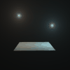
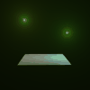
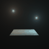
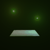

BeamThe Beam shader provides a quick means to get atmospheric effects from light sources. Halos around bright lights, are typical examples of the Beam shader in action.Unlike most other volumic lighting shaders, Beam is ultra-fast: tests on typical scenes show that Beam adds less than 10% to the rendering time. This speed is achieved by eliminating shadow calculations; this means that when shadows are necessary, the artist is responsible creating geometry for the beam's area of effect. Note that Beam requires light sources with an origin, directional lights work less good. If attached to the camera the shader will only create halos around the origin of point lights and spotlights. To create effects like a Sunbeam attach the shader to the volume slot of a material, then model a cone, assign the material to the cone. Assign a fully transparent surface shader to the material, and assign a fully transparent shadow shader to the material. Put a light source at the top of the cone. Assure the light source is used by the material. Note that the Beam shader ignores attenuation properties of the light. Adjust the Density parameter to get a large effect. The size and form of the geometry determines the form or the beam.
 



Density allows the artist to adjust the "thickness" of the fog surrounding the light source. Larger values cause the beam to be bigger and brighter; smaller values cause the beam to be smaller and dimmer.
Lights specifies which lights should produce beams.
|